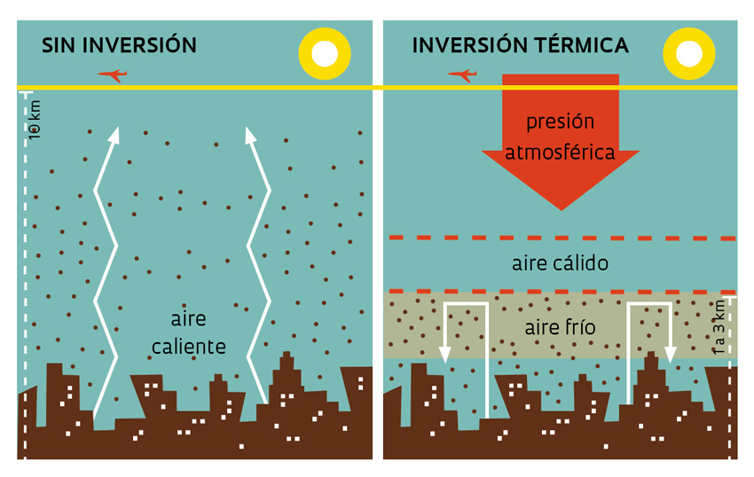

En condiciones normales, la temperatura del aire, disminuye con la altura, y el aire caliente asciende, pero en condiciones de inversion, el aire caliente circula sobre una capa de aire frio y los contaminantes quedan atrapados. esta condicion puede permanecer por varios dias, dependiendo de los factores climaticos, acumulando los contaminantes que se generan durante los dias que permanezcan. Ocasiona serveros da;os a la salud de los organismos vivos y se rompe, hasta que la temperatura del aire inferior se caliente (En invierno suycede con mayor frecuencia).

Este fenomeno causo un severo da;o en 1952 en la ciudad de Londres, donde se acumularon por varios dias los contaminantes generados principalmente por la quema de carbon en las calefacciones, provocando la muerte de 4,000 personas.
Los contaminantes primarios reaccionan con la luz solar y originan los contaminantes secundarios por reacciones fotoquimicas. Por esta Razon se llama esmofotoquimico. Los Productores finales de estas reacciones son compuestos como el ozono o nitratos de peroxiacilo (PAN), los cuales pueden provocar efectos fisioloficos severos en plantas y animales. La ciudad de Mexico es un ejemplo de urbe donde en invierno se registran inversiones termicas.